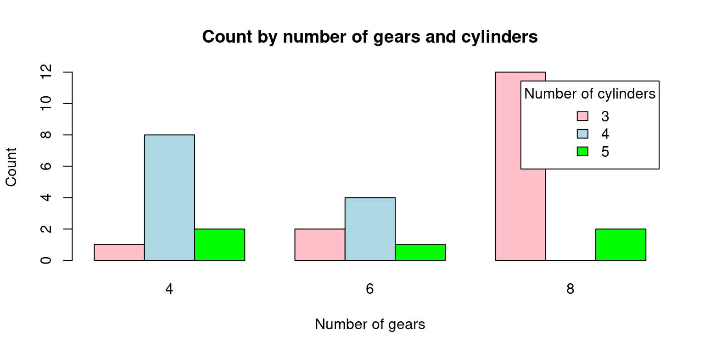
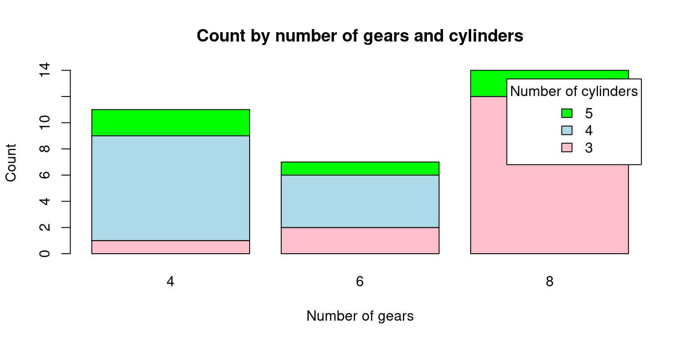

data(mtcars)
attach(mtcars)Categorical Data (2 of 2)
July 26, 2023 V1.3 (Work in progress)
A contingency table, also known as a cross-tabulation or crosstab, is a type of table in a matrix format that displays the (multivariate) frequency distribution of the variables. In the case of a univariate factor variable, a contingency table is essentially the same as a frequency table, as there’s only one variable involved. In more complex analyses involving two or more variables, contingency tables provide a way to examine the interactions between the variables (Agresti, 2007).
Frequency Table for More than One Variable
table()
t1 = table(am, cyl)
t1 cyl
am 4 6 8
0 3 4 12
1 8 3 2In this example, a two-way frequency table of am and cyl is created using the table() function. The frequency of each grouping of categories is displayed in the table that results. As an illustration, there are 8 cars with a manual gearbox and 4 cylinders, while 3 have an automatic transmission and 3.
xtabs()
t1 =xtabs(~ cyl + gear
, data = mtcars)
t1 gear
cyl 3 4 5
4 1 8 2
6 2 4 1
8 12 0 2In this example, we generate a two-way contingency table of am and cyl using the xtab() method. The frequency of each grouping of categories is displayed in the table that results. As an illustration, there are 8 cars with a manual gearbox and 4 cylinders, while 3 have an automatic transmission and 3. Observe that the table() function used in the preceding example and the xtab() function both yield the same outcome.
ftable()
t2 = ftable(gear ~ cyl
, data = mtcars)
t2 gear 3 4 5
cyl
4 1 8 2
6 2 4 1
8 12 0 2In this example, a two-way contingency table of gear and cyl is created using the ftable() function. The frequency of each grouping of categories is displayed in the table that results. As an illustration, there are 12 automobiles with 8 cylinders and 3 speeds as well as 1 car with 4 cylinders.
Proportions Table for More than One Variable
prop.table
t1 = table(am, cyl)
p1 = prop.table(t1)
p1 cyl
am 4 6 8
0 0.09375 0.12500 0.37500
1 0.25000 0.09375 0.06250In this example, we generate a frequency table (t1) of the variables am and cyl from the mtcars dataset using the table() method. The frequency of each grouping of categories is displayed in the table that results. 12 automobiles, for instance, have a V-shaped engine, a manual transmission, and 8 cylinders. The same data are then used to generate a proportion table (p1) using the prop.table() function. The percentage of each combination of categories is displayed in the following table. For instance, the dataset contains 56.25% of vehicles with a manual transmission, a V-shaped engine, and 8 cylinders.
Rounding
This function is used to set the width of decimal numbers
round()
r2 = round(p1*100,2)
r2 cyl
am 4 6 8
0 9.38 12.50 37.50
1 25.00 9.38 6.25In this example, we round the proportion tables p0 and p1 to two decimal places using the round() method. The proportion of each category or group of categories, rounded to two decimal places, is presented in the ensuing tables r1 and r2. For instance, 56.25% of automobiles have an automated transmission and 8 cylinders.
addmargins()
The row and column sums of a matrix or table are calculated using the addmargins() function in R, and the sums are then added as new rows and columns to the original matrix or table.
r2 = round(p1*100,2)
m1 = addmargins(r2)
m1 cyl
am 4 6 8 Sum
0 9.38 12.50 37.50 59.38
1 25.00 9.38 6.25 40.63
Sum 34.38 21.88 43.75 100.01In this illustration, we add row and column margins to the rounded proportion table r2 using the addmargins() function. The proportion of each category or group of categories, rounded to two decimal places, is included in the resulting table m1, along with row and column margins that display the sums for each row and column. For example, the total proportion of cars with 8 cylinders is 60.42%.
Three Way Relationship
table()
table(cyl
, gear
, am), , am = 0
gear
cyl 3 4 5
4 1 2 0
6 2 2 0
8 12 0 0
, , am = 1
gear
cyl 3 4 5
4 0 6 2
6 0 2 1
8 0 0 2In this example, a three-way contingency table of cyl, gear, and am is created using the table() function. The frequency of each grouping of categories is displayed in the table that results. One vehicle has four cylinders, three gears, and an automatic transmission, whereas eight vehicles have four cylinders, four gears, and manual transmissions. The resulting table, which has a two-dimensional table for each level of the am variable, is three-dimensional.
xtabs()
xtabs(~ cyl + gear + am
, data = mtcars), , am = 0
gear
cyl 3 4 5
4 1 2 0
6 2 2 0
8 12 0 0
, , am = 1
gear
cyl 3 4 5
4 0 6 2
6 0 2 1
8 0 0 2In this example, a three-way contingency table of cyl, gear, and am is created using the xtabs() function. The frequency of each grouping of categories is displayed in the table that results. One vehicle has four cylinders, three gears, and an automatic transmission, whereas eight vehicles have four cylinders, four gears, and manual transmissions. The resulting table, which has a two-dimensional table for each level of the am variable, is three-dimensional. The output table matches the one created by the table() function used in the preceding example exactly.
ftable()
ftable(gear + cyl ~ am
, data = mtcars) gear 3 4 5
cyl 4 6 8 4 6 8 4 6 8
am
0 1 2 12 2 2 0 0 0 0
1 0 0 0 6 2 0 2 1 2In this example, a three-way contingency table of gear, cyl, and am is created using the ftable() function. The frequency of each grouping of categories is displayed in the table that results. One car has four cylinders, three gears, and an automatic gearbox, whereas there are eight cars with four cylinders, four speeds, and manual transmissions. One table exists for each level of the am variable, resulting in a two-dimensional table. Similar to the table created by the xtabs() function used in the preceding example, the output table is produced.
Four Way Relationship
ftable(am + cyl ~ gear + vs
, data = mtcars) am 0 1
cyl 4 6 8 4 6 8
gear vs
3 0 0 0 12 0 0 0
1 1 2 0 0 0 0
4 0 0 0 0 0 2 0
1 2 2 0 6 0 0
5 0 0 0 0 1 1 2
1 0 0 0 1 0 0In this example, we establish a four-way contingency table containing am, cyl, gear, and vs using the ftable() function. The frequency of each grouping of categories is displayed in the table that results. There are two vehicles with a 6-cylinder, 3-gear, automatic transmission, and inline engine, for instance, and three vehicles with four cylinders. The resulting table, which has two two-dimensional tables for each level of the am variable, is four-dimensional.
Visualization of Categorical Variable
Barplot for Bivariate Case (Grouped Barchart)
# Load the mtcars dataset
data(mtcars)
# Create a matrix with count by number of gears and number of cylinders
counts <- table(mtcars$gear, mtcars$cyl)
# Create the bar plot
barplot(counts, beside = TRUE, col = c("pink", "lightblue", "green"),
xlab = "Number of gears", ylab = "Count",
main = "Count by number of gears and cylinders",
legend.text = rownames(counts), args.legend = list(title = "Number of cylinders"))
In this code, we first load the mtcars dataset. Then, we use the table() function to compute the counts by number of gears and number of cylinders. We store the result in a matrix called counts.
Finally, we use barplot() to create the plot. We pass the counts matrix as the first argument, and we set beside = TRUE to make sure that the bars are positioned side by side. We also set the colors of the bars using col, and we add labels to the plot using xlab, ylab, and main. We also add a legend to the plot using legend.text and args.legend. Note that rownames(counts) returns the row names of the matrix, which are the number of gears. We set the title of the legend to “Number of cylinders” using args.legend = list(title = “Number of cylinders”).
Barplot for Bivariate Case (Stacked Barchart)
# Load the mtcars dataset
data(mtcars)
# Create a matrix with count by number of gears and number of cylinders
counts <- table(mtcars$gear, mtcars$cyl)
# Create the stacked bar plot
barplot(counts, col = c("pink", "lightblue", "green"),
xlab = "Number of gears", ylab = "Count",
main = "Count by number of gears and cylinders",
legend.text = rownames(counts), args.legend = list(title = "Number of cylinders"),
beside = FALSE)
In this code, we first load the mtcars dataset. Then, we use the table() function to compute the counts by number of gears and number of cylinders. We store the result in a matrix called counts.
Finally, we use barplot() to create the plot. We pass the counts matrix as the first argument, and we set beside = FALSE to make sure that the bars are stacked on top of each other. We also set the colors of the bars using col, and we add labels to the plot using xlab, ylab, and main. We also add a legend to the plot using legend.text and args.legend. Note that rownames(counts) returns the row names of the matrix, which are the number of gears. We set the title of the legend to “Number of cylinders” using args.legend = list(title = “Number of cylinders”).
Mosaic plot
The distribution of two categorical variables in a dataset is displayed graphically in a mosaic plot. Rectangular blocks with sizes proportionate to the number of observations for each combination of the two variables make up the plot. The relative frequency of each category of the second variable within each category of the first variable is represented by segments inside each block.
The interactions between categorical variables can be visualised using mosaic plots, which can also be used to find patterns and associations in large, complicated datasets. They can be used to identify breaks in independence or test hypotheses regarding the connections between the variables. They are especially helpful for examining interactions between two or more categorical variables.
# Load the mtcars dataset
data(mtcars)
# Create a mosaic plot of the data
mosaicplot(table(mtcars$cyl, mtcars$vs),
main = "Cylinder count by engine type",
xlab = "Engine type",
ylab = "vs")
With the help of this code, a mosaic plot of the number of vehicles in the mtcars dataset broken down by cylinder count and engine type will be produced (V-shaped or straight). The mosaicplot() method is used to generate the actual plot, and the table() function is used to generate a table of counts for the cyl and vs variables in the mtcars dataset. A title and axis labels are added using the main, xlab, and ylab variables.
To build a mosaic plot of the categorical data in mtcars that interests you, you can change this code. To plot the variables, simply swap out mtcars$cyl and mtcars$vs for the desired values. Remember that mosaic plots can be used to compare the distribution of categories within several groups.
# Load the mtcars dataset
data(mtcars)
# Install and load the vcd package (if it's not already installed)
install.packages("vcd")Installing package into '/cloud/lib/x86_64-pc-linux-gnu-library/4.3'
(as 'lib' is unspecified)library(vcd)Loading required package: grid# Create a mosaic plot of mpg (miles per gallon) vs. vs (engine shape)
mosaic(~ cyl + vs, data = mtcars, main = "Mosaic Plot of MPG vs. VS")
The mtcars dataset, a built-in dataset in R that contains data on 32 cars, is initially loaded by this code. The vcd package, which has utilities for making mosaic plots and other kinds of visualisations, is then installed and loaded by the code.
Finally, using the mosaic() function from the vcd package, the code generates a mosaic plot of the mpg (miles per gallon) and vs (engine shape) variables in the mtcars dataset. The resulting plot illustrates how vehicles with V-shaped vs. straight engines have different mpg distributions (vs values of 0 vs. 1, respectively).
# Load the mtcars dataset
data(mtcars)
# Install and load the vcd package (if it's not already installed)
install.packages("vcd")Installing package into '/cloud/lib/x86_64-pc-linux-gnu-library/4.3'
(as 'lib' is unspecified)library(vcd)
# Create a mosaic plot of mpg (miles per gallon) vs. vs (engine shape)
mosaic(~ cyl + vs + gear, data = mtcars, main = "Mosaic Plot of MPG vs. VS")
References
Healy, K., & Lenard, M. T. (2014). A practical guide to creating better looking plots in R. University of Oregon. https://escholarship.org/uc/item/07m6r
Few, S. (2004). Show me the numbers: Designing tables and graphs to enlighten. Analytics Press.
Friendly, M. (1994). Mosaic displays for multi-way contingency tables. Journal of the American Statistical Association, 89(425), 190-200.